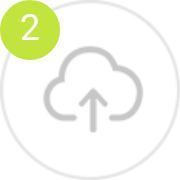
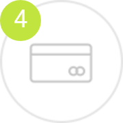
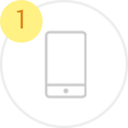
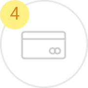

放心刷—手机支付保障类产品 爱刷科技
最长保障期限1年
适用年龄18-60周岁
保障功能
病毒木马
窃取资金
手机损坏
资金找回
手机丢失
防止盗刷
保障须知
1.本保险仅限网络账户所有者本人投保，且被保险人年龄在18-60周岁，保险合同方为有效。
2.投保人对所填信息应保证其真实性，若投保人故意或者因重大过失未履行如实告知义务，足以影响保险人决定是否同意承保或者提高保险费率的，保险人有权解除合同。
3.本保险自保单支付成功后次日零时起生效，另有约定除外。
4.对保费交清前发生的保险事故，保险人不承担保险责任。
5.本产品采用电子保单形式承保，法律效力等同于纸质保单。如果您需要纸质保单，请拨打客服电话。若需寄送，邮费将由您自行承担。
6.保险人仅承保在以下第三方支付平台上开设的网络账户资金安全：支付宝、财付通（包括微信钱包、QQ钱包、其他财付通业务）、卡拉卡、银联在线支付、京东支付、易付宝、翼支付、联动优势、快钱支付、百度钱包。
如果您还有任何疑问，详情细阅读保险条款活拨打安心保险客户服务热线400-88-45678进行咨询。
如何获得赔偿
微信平台报案理赔单证收集流程
客户进入安心保险公众号，点击右下角安心生活，进入人工客服，在微信平台对值班客服进行出险报案，客服人员录入报案信息。

客户通过微信平台上传以下理赔资料照片
1.持卡人或附属卡持卡人的身份证明
2.倍保险人银行卡的挂失/冻结证明、挂失/冻结记录
3.银行卡盖章的流水记录单
4.公安机关出具的报案/立案证明（5000元以下提供公安机关的报案回执、5000元以上提供公安机关的立案证明）
客服人员将客户发送的资料转接给调度指定的本案查勘人员，查勘人员进行审核。

上传理赔系统的资料审核通过后三个工作日内将赔款支付到客户指定账户。
电话传统报案理赔单证收集流程

客户出险后，拨打400-88-45678理赔电话进行报案，对保单信息、保险事故进行简要说明，客服人员会将安心保险的公共邮箱地址：service@answern.com以短信的形式发送至客户手机
客户按客服人员要求收集下列资料，并以照片形式发送至公司客服邮箱
1.持卡人或附属卡持卡人的身份证明 2.倍保险人银行卡的挂失/冻结证明、挂失/冻结记录 3.银行卡盖章的流水记录单 4.公安机关出具的报案/立案证明（5000元以下提供公安机关的报案回执、5000元以上提供公安机关的立案证明）
查勘人员直接进入公共邮箱，提取邮箱资料进行审核

上传理赔系统的资料审核通过后三个工作日内将赔款支付到客户指定账户。
常见问题
产品功能费:￥10.00
1、本产品保障期限为一年,购买成功后次日生效。
2、购买前请仔细阅读本产品的适用条款, 尤其是其中免除责任的条款。
3、您购买本产品,须授权“爱刷（北京）科技有限公司”查询您的信用信息,用于评估向您承诺的服务的交易条件,评估您是否享有快速理赔等权益。
爱刷（北京）科技有限公司
安心财产保险有限责任公司
“放心刷”产品服务条款
第一条本产品服务用户完成购买流程，即视为用户认可并同意本服务条款。
第二条依法持有绑定Apple Pay的自然人均可购买本产品。
第三条依法持有绑定Apple Pay的银行卡的自然人可作为本产品的服务对象。
第四条在使用期间内，因下列情形导致用户持有的绑定Apple Pay的银行卡内资金损失的，”爱刷科技”对用户在挂失或冻结银行卡前24小时内发生的资金损失，按照本服务条款的约。
（一）用户的银行卡被他人盗刷、盗用、复制；
（二）用户在被歹徒胁迫的状态下，将银行卡转交他人，或向他人透露其银行卡信息、转账或支取现金给他人；
（三）用户的银行卡对应的个人网上银行账户或手机银行账户被他人恶意盗用。
第五条由于下列原因造成的损失、费用和责任，”爱刷科技”不负责赔偿：
（一）用户或其家庭成员的操作错误、故意行为或违法犯罪行为；
（二）用户的银行卡或网银帐户被其雇佣人员、共同居住人员盗用；
（三）用户或其家庭成员自愿出租、转借银行卡给其他人；
（四）诈骗行为；
（五）其他未在保险责任中列明的损失或费用。
第六条保障金额为赔偿的最高金额， 由投保人与”爱刷科技”协商确定，并在订单中载明。
第七条免赔额（率）由“爱刷科技”与用户在订立保险合同时协商确定，并在保险单中载明。
第八条用户应当妥善保管账户的相关信息，如发生银行卡遗失、被盗窃、被抢夺抢劫、复制，或发现账单账目或资金交易异常后，应迅速向银行或支付机构办理挂失或冻结手续。
第九条用户请求赔偿时，请向”爱刷科技”提供下列单据和资料：
（一）持卡人或附属卡持卡人的身份证明复印件；
（二）绑定Apple Pay银行卡的挂失/冻结证明、挂失/冻结记录；
（三）公安机关出具的报案回执；
（四）有关损失资金的交易记录，比如涉及转账，需提供收款方姓名及账号等信息；
（五）用户所能提供的与确认保险事故的性质、原因、损失程度等有关的其他证明和资料。
第十条赔偿额度：按照用户银行卡帐户的实际损失金额进行赔偿，最高不超过保障金额。
第十一条约定了每次事故免赔的，在扣除每次事故免赔额或按保险合同约定免赔率计算的免赔额后进行赔偿。
第十二条在保险期间内，可多次赔偿，累计最高不超过保障金额；
第十三条若损失涉及外币，将按照用户损失交易当日的外汇兑换基准汇率使用人民币进行赔款支付。
第十四条发生事故时，如果用户的损失在有相同保障的保险项下也能够获得赔偿，则本产品的赔偿限额与其他保险合同及本合同的赔偿限额总和的比例承担赔偿责任。其他保险应承担的赔偿金额，本产品不负责垫付。用户在请求赔偿时应当如实向”爱刷科技”说明与本保险合同保险责任有关的其他保险合同的情况。用户未如实告知导致”爱刷科技”多支付赔偿金的，”爱刷科技”有权向用户追回多支付的部分。
第十五条“爱刷科技”在本条款第十条、第十一条项下进行赔偿后，保障金额相应减少。
第十六条发生保障责任范围内的损失，应由有关责任方负责赔偿的，”爱刷科技”自向用户赔偿保险金之日起，在赔偿金额范围内代位行使用户对有关责任方请求赔偿的权利，用户应当向”爱刷科技”提供必要的文件和所知道的有关情况。 用户已经从有关责任方取得赔偿的，”爱刷科技”赔偿时，可以相应扣减用户已从有关责任方取得的赔偿金额。 事故发生后，在未赔偿保险金之前，用户放弃对有关责任方请求赔偿权利的，”爱刷科技”不承担赔偿责任；”爱刷科技”向用户赔偿保障金后，用户未经”爱刷科技”同意放弃对有关责任方请求赔偿权利的，该行为无效；由于用户故意或者因重大过失致使”爱刷科技”不能行使代位请求赔偿的权利的，”爱刷科技”可以扣减或者要求返还相应的保障金。
第十七条用户请求赔偿的诉讼时效期间为二年，自其知道或者应当知道保险事故发生之日起计算。
第十八条因履行本条款发生的争议，由当事人协商解决。协商不成的，提交本条款载明的仲裁机构仲裁；未载明仲裁机构且争议发生后未达成仲裁协议的，依法向有管辖权的中华人民共和国人民法院起诉。
第十九条争议处理适用中华人民共和国法律（不包括港澳台地区法律）。
第二十条本产品订购后24小时内生效，订购成功后即进入用户审核流程，保障费用不予退还。
家庭成员：包括用户的近亲属和与其共同生活的其他亲属。没有亲属关系但在同一家庭长期共同生活的人也视为用户的家庭成员。
雇佣人员：指与用户存在事实雇佣关系、为用户提供家政服务工作的人。
共同居住人员：指与用户共同居住在同一套房屋内超过5天的人。